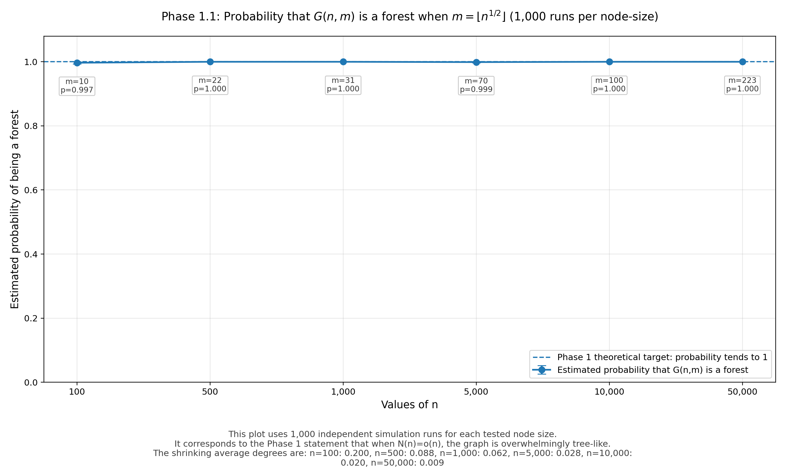
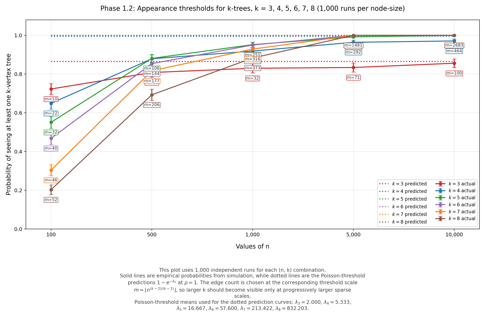

Five Phases in the Evolution of Random Graphs
This page follows the structure and visual style of my giant-components page, but reorganizes the discussion into five separate phases. Each section contains a boxed verbatim-style excerpt based on the supplied screenshots, followed by placeholders for one video and one PNG figure.
erdos_renyi_1960_phase1_1a.mp4, erdos_renyi_1960_phase1_1b.mp4, and erdos_renyi_1960_phase1_1.png.
1. Phase 1
Phase 1. corresponds to the range $N(n) = o(n)$. For this phase it is characteristic that $\Gamma_{n, N(n)}$ consists almost surely (i.e. with probability tending to $1$ for $n \to +\infty$) exclusively of components which are trees. Trees of order $k$ appear only when $N(n)$ reaches the order of magnitude $n^{\frac{k-2}{k-1}}$ $(k = 3, 4, \ldots)$.
If $N(n) \sim \rho n^{\frac{k-2}{k-1}}$ with $\rho > 0$, then the probability distribution of the number of components of $\Gamma_{n, N(n)}$ which are trees of order $k$ tends for $n \to +\infty$ to the Poisson distribution with mean value
If $\dfrac{N(n)}{n^{\frac{k-2}{k-1}}} \to +\infty$ then the distribution of the number of components which are trees of order $k$ is approximately normal with mean
and with variance also equal to $M_n$. This result holds also in the next two ranges, in fact it holds under the single condition that $M_n \to +\infty$ for $n \to +\infty$.
How I am reading Phase 1 empirically. Phase 1 is the regime where the graph is still extremely sparse, so the overall picture should look like a forest rather than a cycle-rich network. For finite simulations, the cleanest way to see the theory is to compare the same construction at $n = 100$, $1000$, and $10{,}000$, and ask what changes as the graph gets larger while remaining in the sparse range $N(n)=o(n)$.
The four subsections below break the paragraph into smaller ideas: first the “forest” interpretation, then the threshold scale for seeing trees of a fixed size, then the Poisson counting regime right at threshold, and finally the approximately normal regime when the count of such trees becomes large.
Forest viewpoint: $N(n)=o(n)$ means the graph stays overwhelmingly tree-like
Animation A
erdos_renyi_1960_phase1_1a.mp4Animation B
erdos_renyi_1960_phase1_1b.mp4Figure

erdos_renyi_1960_phase1_1.pngWhat is happening here. The sentence $N(n)=o(n)$ says that the number of edges grows more slowly than the number of vertices. Equivalently, the average degree $2N(n)/n$ goes to $0$. So most vertices should still be isolated, and most nontrivial connected components should be tiny trees rather than cycle-bearing pieces.
| Example choice inside Phase 1 | $n=100$ | $n=1000$ | $n=10{,}000$ |
|---|---|---|---|
| Take $N(n)=\lfloor\sqrt{n}\rfloor$ | $N=10$ | $N=31$ | $N=100$ |
| Average degree $2N/n$ | $0.20$ | $0.062$ | $0.020$ |
| What the picture should look like | Many isolates, a few edges and tiny paths, with finite-size noise still visible | Even more dominated by isolates and tiny trees | Extremely sparse forest-like picture, with almost no room for large connected pieces |
- For $n=100$, you may still occasionally see a stray cycle in some runs, because finite-size randomness is noticeable.
- For $n=1000$, the empirical picture should align much better with the claim that every component is a tree, or at least that non-tree behavior is very rare.
- For $n=10{,}000$, the phrase “almost surely” should begin to feel concrete: repeated simulations should overwhelmingly look like random forests.
- The theory is not saying every sample path is identical. It says the probability of seeing only tree components moves closer and closer to $1$ as $n$ becomes large.
Appearance thresholds: trees of order $k$ show up at scale $N(n)\asymp n^{\frac{k-2}{k-1}}$
Animation A
erdos_renyi_1960_phase1_2a.mp4Animation B
erdos_renyi_1960_phase1_2b.mp4Figure

erdos_renyi_1960_phase1_2.pngWhat is happening here. The next sentence says that a tree-component on exactly $k$ vertices does not become visible at an arbitrary sparse scale. It begins to appear when the edge count reaches the order of magnitude $n^{\frac{k-2}{k-1}}$. So larger tree-components require denser graphs before they show up in noticeable numbers.
| Threshold scale for fixed tree size | $n=100$ | $n=1000$ | $n=10{,}000$ |
|---|---|---|---|
| $k=3$ tree threshold: $n^{1/2}$ | $10$ | $31.6$ | $100$ |
| $k=4$ tree threshold: $n^{2/3}$ | $21.5$ | $100$ | $464.2$ |
| $k=5$ tree threshold: $n^{3/4}$ | $31.6$ | $177.8$ | $1000$ |
- If you are studying 3-vertex trees, the natural edge scales to compare are around $10$, $32$, and $100$ for $n=100$, $1000$, and $10{,}000$.
- At those same edge counts, 4-vertex and 5-vertex trees are still less developed, because their thresholds are higher.
- This is the empirical meaning of “trees of order $k$ appear only when $N(n)$ reaches the order of magnitude $n^{\frac{k-2}{k-1}}$.”
- In animations, the visual effect should be that larger tree-components arrive later: first tiny edges and 3-vertex trees, then somewhat larger tree pieces, and only afterwards more elaborate acyclic components.
At threshold: the number of $k$-vertex trees should look Poisson
Animation A
erdos_renyi_1960_phase1_3a.mp4Animation B
erdos_renyi_1960_phase1_3b.mp4Figure

erdos_renyi_1960_phase1_3.pngWhat is happening here. If $N(n) \sim \rho n^{\frac{k-2}{k-1}}$, then we are right in the window where trees of order $k$ are rare but visible. The count does not explode; instead it stabilizes into a Poisson-type random variable. That means many runs with $0$, many with $1$, fewer with $2$, and so on.
| Example: choose $k=3$ and $\rho=1$ | $n=100$ | $n=1000$ | $n=10{,}000$ |
|---|---|---|---|
| Threshold-scale edge count $N(n)\approx n^{1/2}$ | $10$ | $31.6$ | $100$ |
| Poisson mean from the formula $\lambda=\dfrac{(2\rho)^{k-1}k^{k-2}}{k!}$ | $\lambda = \dfrac{(2)^2\cdot 3}{3!}=2$ for all three graphs | ||
| Empirical expectation over many runs | Counts of 3-vertex trees should cluster around $0$, $1$, $2$, $3$ | Histogram should look more convincingly Poisson | Very clean rare-event counting regime, with finite-size noise much reduced |
- The formula for $\lambda$ gives the limiting average number of $k$-vertex tree-components, not the exact count in any one graph.
- For $k=3$ and $\rho=1$, all three graph sizes are aiming at the same limiting mean $\lambda=2$, but the larger graphs should match it more cleanly.
- This is where repeated simulation becomes especially informative: one sample graph is not enough, because the statement concerns the distribution of the count over many runs.
- A good Phase 1.3 figure would therefore be a histogram or frequency table rather than a single network picture alone.
Above threshold: many $k$-vertex trees and an approximately normal count
Animation A
erdos_renyi_1960_phase1_4a.mp4Animation B
erdos_renyi_1960_phase1_4b.mp4Figure

erdos_renyi_1960_phase1_4.pngWhat is happening here. Once $N(n)$ is much larger than $n^{\frac{k-2}{k-1}}$, the number of tree-components of order $k$ is no longer a small Poisson count. It becomes large enough that the fluctuations are approximately normal, with mean $M_n$ and variance also about $M_n$. In practice, the count should now wobble around a visible center with spread on the order of $\sqrt{M_n}$.
| Example: choose $k=3$ and $N(n)=\lfloor n^{0.6}\rfloor$ | $n=100$ | $n=1000$ | $n=10{,}000$ |
|---|---|---|---|
| Edge count | $15$ | $63$ | $251$ |
| Compared with the 3-tree threshold $n^{1/2}$ | Above threshold, but only modestly | More clearly above threshold | Decisively above threshold while still remaining in Phase 1 |
| What should happen to the count of 3-vertex trees | It should be more common than in the Poisson window, though still noisy | The count should concentrate around a visible mean | A bell-shaped empirical histogram becomes much more plausible |
- The formula $$M_n = n\,\frac{k^{k-2}}{k!}\left(\frac{2N(n)}{n}\right)^{k-1} e^{-\frac{2kN(n)}{n}}$$ should be read as: number of possible places for a $k$-tree, times the chance the required edges exist, times the chance the tree stays isolated from the rest of the graph.
- For $n=100$, the approximation may still look rough, because the sample size is not large enough for a clean bell curve.
- For $n=1000$, the distinction between the Poisson window and the “many copies” window becomes easier to see in repeated simulations.
- For $n=10{,}000$, the theory should translate most cleanly: the graph is still sparse overall, but the count of a fixed local structure can already behave in an approximately normal way.
2. Phase 2
Phase 2. corresponds to the range $N(n) \sim cn$ with $0 < c < 1/2$.
In this case $\Gamma_{n, N(n)}$ already contains cycles of any fixed order with probability tending to a positive limit: the distribution of the number of cycles of order $k$ in $\Gamma_{n, N(n)}$ is approximately a Poisson-distribution with mean value
In this range almost surely all components of $\Gamma_{n, N(n)}$ are either trees or components consisting of an equal number of edges and vertices, i.e. components containing exactly one cycle.
The distribution of the number of components consisting of $k$ vertices and $k$ edges tends for $n \to +\infty$ to the Poisson distribution with mean value
In this phase though not all, but still almost all (i.e. $n-o(n)$) vertices belong to components which are trees. The mean number of components is $n - N(n) + O(1)$, i.e. in this range by adding a new edge the number of components decreases by $1$, except for a finite number of steps.
erdos_renyi_1960_phase_2.mp4
erdos_renyi_1960_phase_2.png3. Phase 3
Phase 3. corresponds to the range $N(n) \sim cn$ with $c \geq 1/2$. When $N(n)$ passes the threshold $n/2$, the structure of $\Gamma_{n, N(n)}$ changes abruptly. As a matter of fact this sudden change of the structure of $\Gamma_{n, N(n)}$ is the most surprising fact discovered by the investigation of the evolution of random graphs.
While for $N(n) \sim cn$ with $c < 1/2$ the greatest component of $\Gamma_{n, N(n)}$ is a tree and has (with probability tending to $1$ for $n \to +\infty$) approximately $\dfrac{1}{\alpha}\left(\log n - \dfrac{5}{2}\log\log n\right)$ vertices, where $\alpha = 2c - 1 - \log 2c$, for $N(n) \sim n/2$ the greatest component has (with probability tending to $1$ for $n \to +\infty$) approximately $n^{2/3}$ vertices and has a rather complex structure.
Moreover for $N(n) \sim cn$ with $c > 1/2$ the greatest component of $\Gamma_{n, N(n)}$ has (with probability tending to $1$ for $n \to +\infty$) approximately $G(c)n$ vertices, where
(clearly $G(1/2)=0$ and $\lim_{c \to +\infty} G(c)=1$).
Except this “giant” component, the other components are all relatively small, most of them being trees, the total number of vertices belonging to components which are trees being almost surely $n(1-G(c)) + o(n)$ for $c \geq 1/2$.
As regards the mean number of components, this is for $N(n) \sim cn$ with $c > 1/2$ asymptotically equal to
The evolution of $\Gamma_{n, N(n)}$ in Phase 3 may be characterized by that the small components (most of which are trees) melt, each after another, into the giant component, the smaller components having the larger chance of “survival”; the survival time of a tree of order $k$ which is present in $\Gamma_{n, N(n)}$ with $N(n) \sim cn$, $c > 1/2$ is approximately exponentially distributed with mean value $n/2k$.
erdos_renyi_1960_phase_3.mp4
erdos_renyi_1960_phase_3.png4. Phase 4
Phase 4. corresponds to the range $N(n) \sim c n \log n$ with $c \leq 1/2$. In this phase the graph almost surely becomes connected. If
then there are with probability tending to $1$ for $n \to +\infty$ only trees of order $\leq k$ outside the giant component, the distribution of the number of trees of order $k$ having in the limit again a Poisson distribution with mean value
Thus for $k=1$, i.e. for
$\Gamma_{n, N(n)}$ consists, with probability tending to $1$ for $n \to +\infty$, only of a connected component containing $n-O(1)$ points and a few isolated points, the distribution of the number of these being approximately a Poisson distribution with mean value $e^{-2y}$. Thus in case (4) the probability that the whole graph $\Gamma_{n, N(n)}$ is connected tends to $e^{-e^{-2y}}$ for $n \to +\infty$ and thus this probability approaches $1$ as $y$ increases.
This last result has been obtained by us already in 1958. The probability of $\Gamma^{**}_{n,N}$ being connected has been investigated by E. N. Gilbert. It should be mentioned that the investigation of $\Gamma^{**}_{n,N}$ can be reduced to that of $\Gamma_{n,N}$ as follows. $\Gamma^{**}_{n,N}$ can be obtained by first choosing the value $k$ of a random variable $\xi$ having the binomial distribution
and then choosing $\Gamma_{n,k}$. In this way one can show that the threshold and the threshold function for connectivity of $\Gamma^{**}_{n,N}$ are the same as that of $\Gamma_{n,N}$.
2) The mean number of components of $\Gamma^{**}_{n,N}$ has been investigated in [3]. Our results for $\Gamma_{n,N}$ are however more far reaching.
3) This idea has been used by J. Hájek [5] in the theory of sampling from a finite population who has shown in this way that the Lindeberg-type conditions given by us [6] for the validity of the central limit theorem for samples from a finite population are not only sufficient but also necessary.
erdos_renyi_1960_phase_4.mp4
erdos_renyi_1960_phase_4.png5. Phase 5
Phase 5. consists of the range $N(n) \sim (n \log n)\,\omega(n)$ where $\omega(n) \to +\infty$. In this range the whole graph is not only almost surely connected, but the orders of all points are almost surely asymptotically equal. Thus the graph becomes in this phase “asymptotically regular”.
erdos_renyi_1960_phase_5.mp4
erdos_renyi_1960_phase_5.png